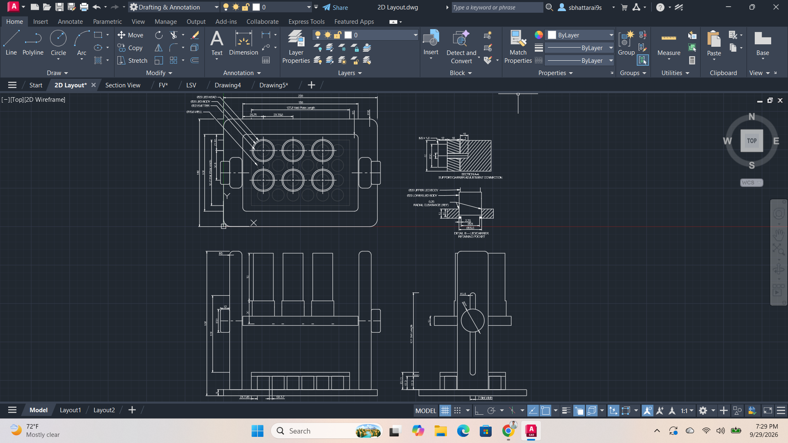
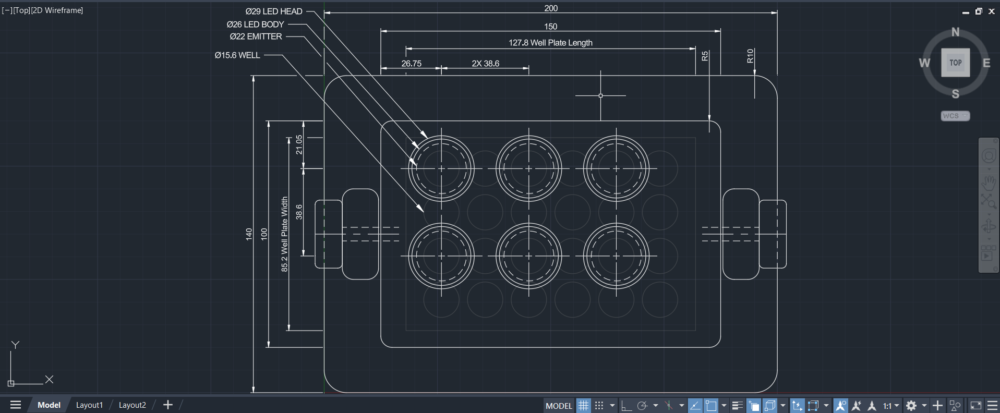
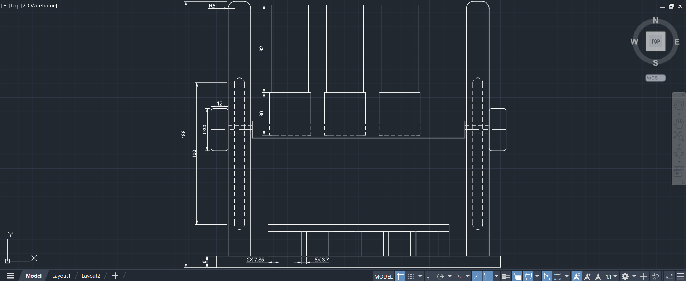
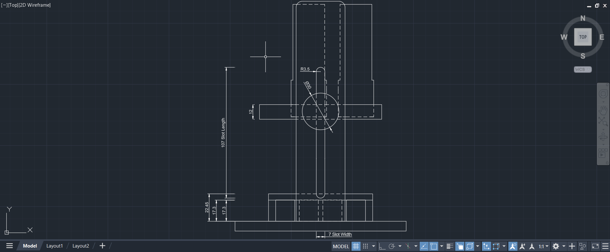
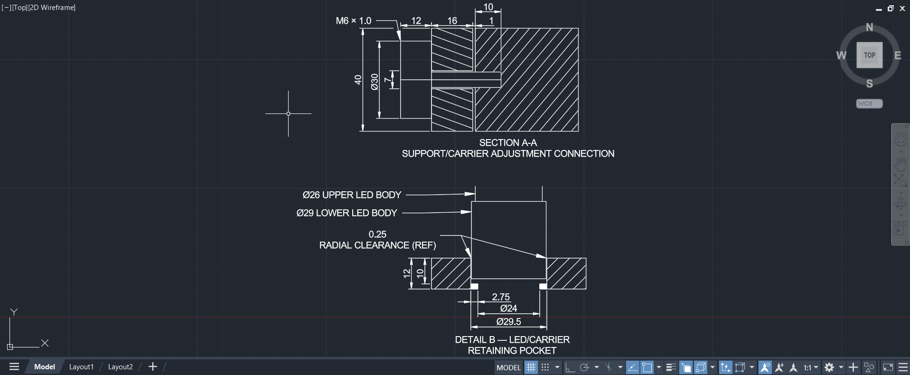

Mechanical Design • AutoCAD • SOLIDWORKS • Biomedical Research
In-progress mechanical design for controlled and repeatable positioning of LED light sources above multi-well cell-culture plates for photobiomodulation experiments.
AutoCAD 2D layout, major dimensions, orthographic views, adjustment features, and connection details.
Individual component modeling and full mechanical assembly development in SOLIDWORKS.
Prototype fabrication, assembly evaluation, positioning verification, and experimental testing.
This project is developing an adjustable mechanical platform for positioning multiple LED light sources above a multi-well cell-culture plate. The goal is to create a more controlled and repeatable illumination setup for laboratory photobiomodulation experiments.
The design includes a supported LED carrier, vertical adjustment slots, mechanical locking features, LED retaining pockets, and a dedicated sample-platform area. The current design phase focuses on converting the completed AutoCAD layout into individual SOLIDWORKS parts and a complete three-dimensional assembly.
Allow the LED carrier to move vertically so the source-to-sample distance can be adjusted and reproduced between experiments.
Position multiple LED sources directly above selected wells while maintaining consistent mechanical alignment across the plate.
Provide a defined platform for the multi-well plate so its location remains consistent relative to the illumination system.
The first design phase was completed in AutoCAD. The layout establishes the overall geometry of the system and defines the relationship between the base, vertical supports, adjustable carrier, LED locations, and multi-well plate.
Orthographic and sectional views were developed to define component dimensions and mechanical interfaces before beginning the 3D CAD model. Particular attention was given to the vertical adjustment mechanism and LED-retaining geometry.

Complete working layout showing the top, front, side, sectional, and detailed views used to establish the geometry before 3D modeling.
Detailed AutoCAD views used to define the major components, adjustment system, LED positioning, and mechanical interfaces.

Top-view layout showing six LED positions aligned above selected wells of the multi-well plate, along with the carrier and support geometry.

Front elevation showing the support structure, LED carrier, sample platform, and overall vertical arrangement of the system.

Side elevation showing the elongated adjustment slot used to reposition the LED carrier vertically and control source-to-sample distance.

Sectioned details defining the support-to-carrier adjustment connection and the retaining geometry used to locate the LED bodies within the carrier.
Select any drawing to view the full-resolution version.
With the 2D layout established, the project is now moving into SOLIDWORKS. Individual mechanical components will be modeled from the AutoCAD dimensions and then combined into a complete assembly.
This phase will be used to evaluate component fit, clearances, adjustment travel, assembly relationships, and overall manufacturability before physical fabrication.
Status: SOLIDWORKS modeling is currently in progress. Additional CAD models and assembly views will be added as the design develops.
Convert the AutoCAD geometry into manufacturable SOLIDWORKS components with defined dimensions and mechanical features.
Combine the components into a complete assembly and verify movement, alignment, interference, and adjustment range.
Fabricate the system and evaluate mechanical stability, positioning repeatability, and suitability for laboratory illumination experiments.